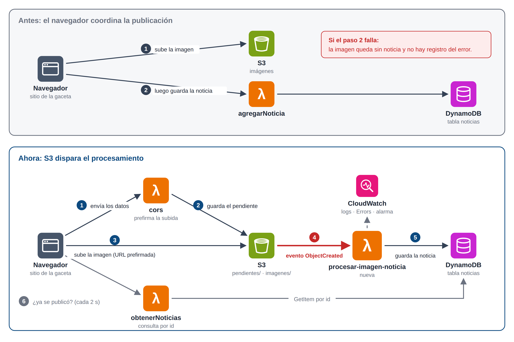
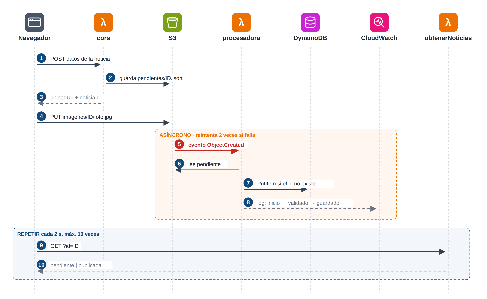
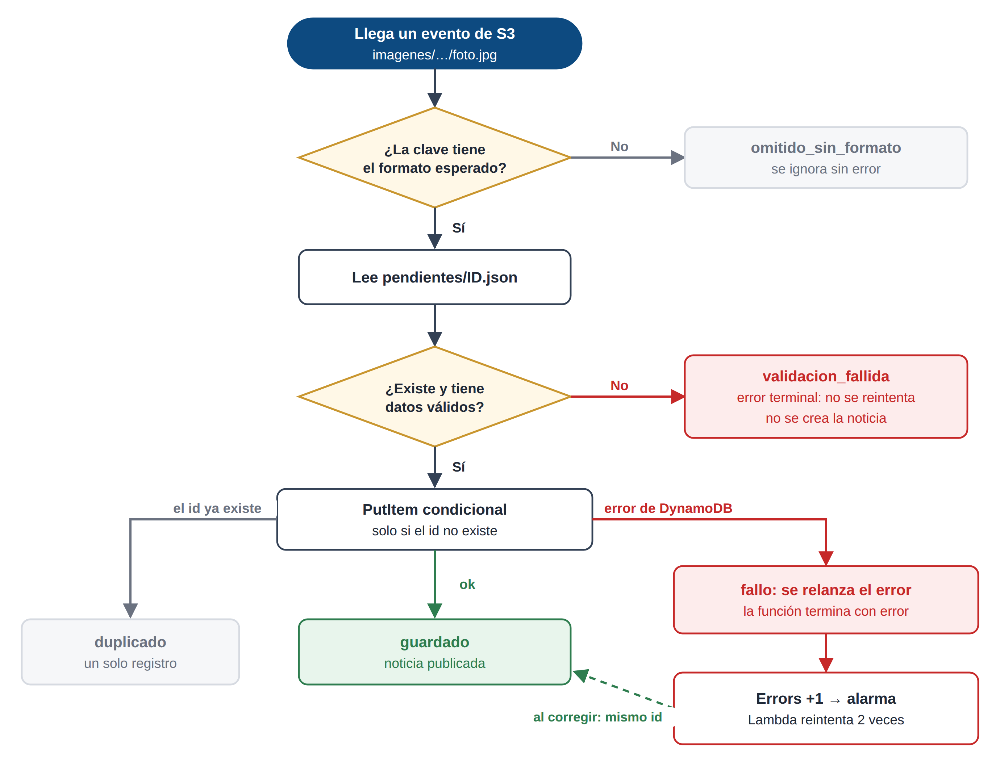

| Proyecto | Gaceta Universitaria «El Unsito» en Amazon Web Services |
|---|---|
| Tema del equipo | Monitoreo y resiliencia: evento de S3 → Lambda, logs, métrica y alarma |
| Región | us-east-2 (Ohio) |
| Servicios | Amazon S3, AWS Lambda (Node.js 24.x), Amazon DynamoDB, Amazon CloudWatch, AWS IAM |
| Recurso nuevo | Función procesar-imagen-noticia, su rol y la alarma gaceta-procesadora-errores |
| Verificación | Funcionamiento normal y fallos provocados, todos con el resultado esperado (27 de octubre de 2026) |
| Costo | 0.00 USD, dentro del nivel gratuito |
Problema y objetivo
La gaceta ya permitía publicar noticias con imagen, pero el navegador coordinaba todo el proceso: primero subía la imagen a Amazon S3 y después llamaba a la función agregarNoticia para guardar la noticia en DynamoDB. Si la segunda llamada fallaba, la imagen quedaba almacenada sin noticia y no existía ningún registro, métrica ni aviso del error.
El objetivo fue que la nube procese la publicación por sí misma en cuanto llega la imagen, y que cualquier fallo quede registrado, se reintente cuando tenga sentido y genere una alerta. En concreto, el equipo se propuso:
- Conectar el evento de carga de S3 con una función Lambda y retirar la llamada que hacía el navegador después de subir la imagen.
- Registrar logs útiles de esa función sin incluir secretos.
- Definir una señal observable —la métrica de errores— con una alarma.
- Documentar qué ocurre ante una carga fallida, una imagen sin datos y un error al guardar.
El trabajo se hizo sobre el bucket y la tabla que comparte todo el grupo, sin modificar su estructura. Las noticias sin imagen siguen usando la función agregarNoticia, porque no generan un evento de S3. La cola de mensajes fallidos con SQS, propuesta como ampliación opcional, no se implementó.
Arquitectura
El cambio principal es quién inicia el guardado. Antes lo hacía el navegador con una segunda llamada; ahora lo hace S3, que avisa a una función nueva en cuanto termina de recibir la imagen (figura 1).

La web envía primero los datos de la noticia. La función cors los guarda como «pendiente» y devuelve un permiso temporal para subir la imagen. Al llegar la imagen, S3 invoca a procesar-imagen-noticia, que lee el pendiente, lo valida y guarda la noticia. Mientras tanto, la web pregunta cada dos segundos si la noticia ya está publicada (figura 2).

| Recurso | Nombre | Función |
|---|---|---|
| Bucket S3 | mis-noticias-daniel-imagenes-906-2026 | Privado. Guarda las imágenes y los pendientes |
| Tabla DynamoDB | noticias | Noticias publicadas (clave id) |
| Lambda | cors | Guarda el pendiente y firma la subida |
| Lambda (nueva) | procesar-imagen-noticia | Procesa el evento de S3 y guarda la noticia |
| Lambda | obtenerNoticias | Lista noticias y consulta el estado por id |
| CloudWatch | gaceta-procesadora-errores | Alarma sobre los errores de la procesadora |
Monitoreo
Se eligió la métrica Errors, que Lambda publica en CloudWatch sin configuración adicional. La alarma gaceta-procesadora-errores pasa a estado de alarma cuando hay al menos un error en un minuto. Además, la procesadora escribe una línea de log por etapa (inicio, validado, guardado, duplicado, fallo) con el identificador de la noticia, lo que permite rastrear cualquier publicación. Los logs no incluyen firmas de URL ni el texto de la noticia, y se conservan tres días.
Manejo de fallos
No todos los errores se tratan igual. Los que no se arreglan con reintentos terminan sin error y se registran; los que pueden ser temporales, como un fallo de la base de datos, se relanzan para que Lambda los reintente y la alarma se active (figura 3).

| Situación | Qué hace el sistema | Qué hace el equipo |
|---|---|---|
| Carga fallida | Sin imagen no hay evento, así que no se guarda nada a medias. La web conserva los datos y reintenta con el mismo id. | Volver a publicar desde el formulario. |
| Imagen sin datos | Registra validacion_fallida y termina; no se crea la noticia. | Buscar el id en los logs y publicar de nuevo. |
| Error al guardar en DynamoDB | Registra fallo, reintenta dos veces y enciende la alarma. | Corregir la causa y reprocesar el evento; no se duplica. |
Cómo lo comprobamos
Una vez desplegado el flujo, lo fuimos poniendo a prueba el 27 de octubre de 2026, primero en condiciones normales y después provocando fallos a propósito.
Empezamos por lo básico: publicamos una noticia con imagen desde el sitio. En la red del navegador ya no apareció ninguna llamada a agregarNoticia; fue el evento de S3 el que activó la procesadora, y la noticia quedó guardada en DynamoDB y visible al recargar la página.
Luego buscamos que algo saliera mal. Enviamos una imagen cuyos datos no existían, y la función lo registró como validacion_fallida sin crear una noticia incompleta. Después apuntamos la función a una tabla inexistente para simular una caída de la base de datos: Lambda la reintentó dos veces, la métrica Errors registró el pico y la alarma se encendió; al corregir la tabla, la noticia se guardó con el mismo id y la alarma volvió a la normalidad. Ese mismo fallo nos permitió ver que la web avisa que la noticia sigue en procesamiento en lugar de reenviarla. Por último, repetimos un evento ya procesado y la tabla conservó un solo registro.
| Situación | Qué esperábamos | Qué pasó |
|---|---|---|
| Publicar una noticia con imagen | Que S3 active la procesadora sin intervención del navegador | Se guardó en 1.56 s, sin ninguna llamada a agregarNoticia |
| Recargar el sitio | Que la noticia siga ahí | Aparece con su imagen; en la tabla figura origen = s3-evento |
| Imagen sin datos | Que se descarte sin dejar nada a medias | Se registró validacion_fallida y no se creó la noticia |
| Base de datos caída | Que se reintente y no se pierda la noticia | Tres intentos fallidos; al corregir se guardó con el mismo id |
| Métrica y alarma | Que el fallo se note sin revisar los logs | La alarma se encendió a las 23:46 y se apagó a las 23:51 |
| Evento repetido | Que no se duplique la noticia | Se registró duplicado; quedó un solo registro |
| Procesamiento lento | Que la web espere sin reenviar | Mostró «en procesamiento» y la noticia apareció una sola vez |
Seguridad: mínimo privilegio
La procesadora tiene su propio rol, procesar-imagen-noticia-rol, con una sola política que permite únicamente lo que la función usa. Solo S3 puede invocarla, y únicamente desde el bucket de imágenes.
| Puede | Sobre | No puede |
|---|---|---|
| Leer los datos pendientes | S3, carpeta pendientes/ | Leer las imágenes ni el resto del bucket |
| Guardar noticias | Tabla noticias | Leer, borrar ni recorrer la tabla |
| Escribir logs | Su propio grupo de logs | Escribir en otros grupos |
El código y las variables de entorno no contienen claves. Las otras tres funciones del proyecto siguen con un rol amplio (PowerUserAccess); en un entorno real cada una debería tener el suyo.
Costos y recursos por eliminar
El saldo fue de 120.00 USD antes y después de las pruebas, con un gasto de 0.00 USD: Lambda, S3, DynamoDB bajo demanda y CloudWatch quedaron dentro del nivel gratuito. Para no generar cargos se limitó la retención de logs a tres días, la alarma no envía correos ni SMS y no se crearon colas ni servidores. Los recursos del equipo llevan las etiquetas proyecto=NoticiasAWS, equipo=3 y entorno=Laboratorio.
Al cerrar el curso se eliminan, en este orden: el disparador de S3, la función procesar-imagen-noticia, su rol, la alarma, el grupo de logs, los objetos de pendientes/ y las imágenes de prueba, y las noticias de prueba de la tabla. Si el sitio sigue en uso, antes se restaura la versión original de la función cors.
Conclusiones
La publicación de noticias ya no depende de que el navegador complete una segunda llamada. S3 inicia el procesamiento, cada noticia deja un rastro en los logs, los fallos temporales se reintentan solos y una alarma avisa cuando algo sale mal. Lo comprobamos publicando noticias reales y provocando fallos a propósito: en todos los casos el sistema se comportó como esperábamos y no se duplicó ninguna noticia.
Para un entorno real quedarían pendientes una cola de mensajes fallidos con SQS, el envío de la alarma por correo con SNS, la eliminación automática de los pendientes antiguos y un rol de mínimo privilegio para cada función del proyecto.